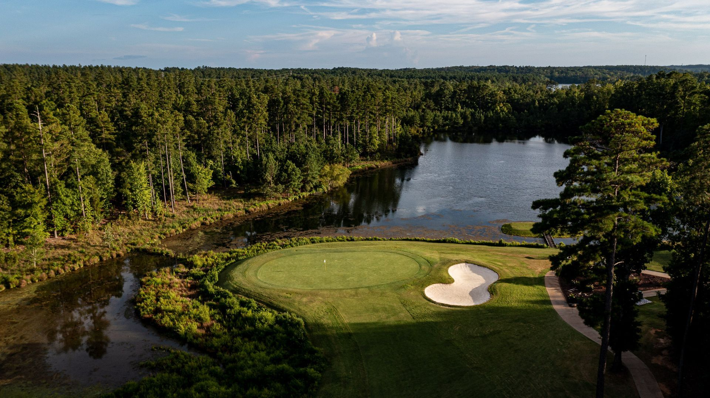
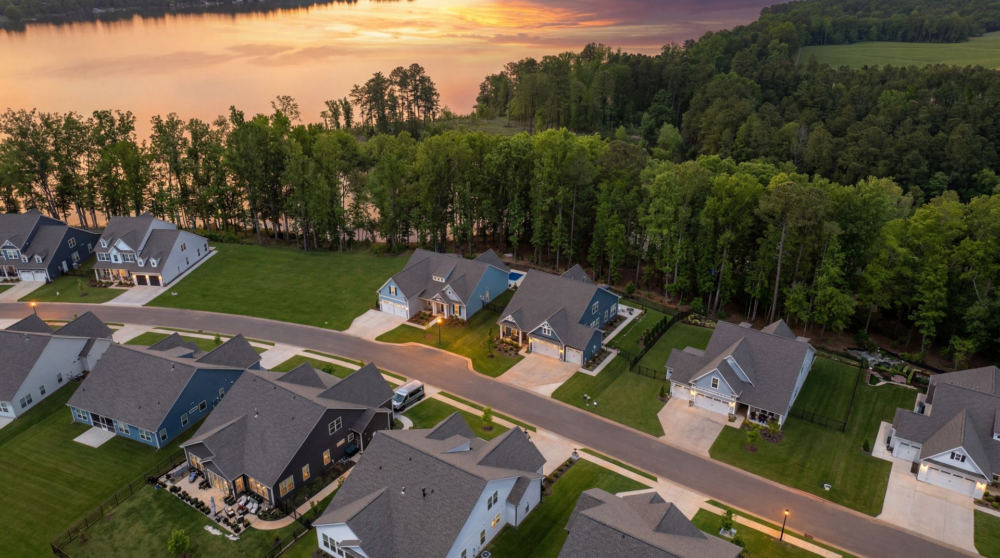
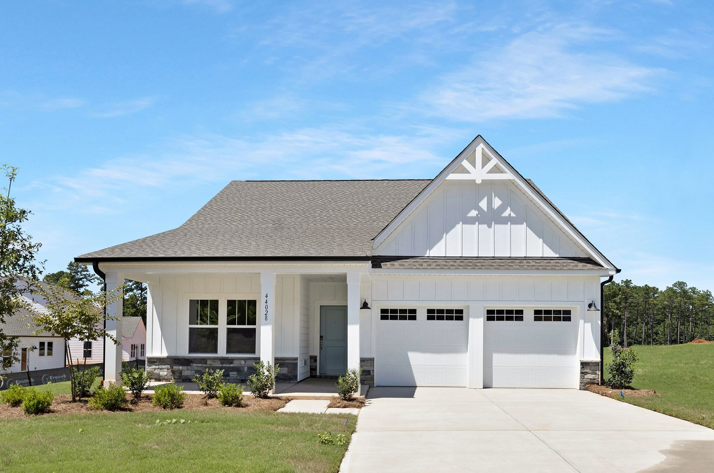

THE FAIRWAY IS CALLING
Make room
for another round.
Enjoy an 18-hole golf course in the community, with practice facilities for working on your game.

EDGEWATER NEW HOMES · LANCASTER, SOUTH CAROLINA
New construction by True Homes. Lake days. Golf days. Let Blake Lineberger help you find your home at Edgewater.
BLAKE LINEBERGER YOUR TRUE HOMES SALES AGENT
MORE THAN AN ADDRESS
Trade the usual routine for time on the water, friendly competition on the courts, and evenings with room to breathe. Edgewater brings a whole collection of ways to enjoy your day into one lake-and-golf community.

THE FAIRWAY IS CALLING
Enjoy an 18-hole golf course in the community, with practice facilities for working on your game.
Boating, kayaking, fishing, and long views across Fishing Creek Lake.
Bring your paddle, find your people, and see the courts in Blake’s video tour.
See the pickleball video ↗Sunny afternoons, a refreshing swim, and a place to unwind close to home.
Walking trails, clubhouse, community center, and a lakeside pavilion bring life outdoors.
Amenity access, memberships, fees, and operating schedules vary. Ask Blake for current details, including golf, marina, courts, and dining at Brickwood.
NEW CONSTRUCTION · TRUE HOMES
Explore available homes or talk through a new build. Start with what matters to you: the setting, the layout, and the way you want to live.

YOUR HOME. YOUR WAY.Pricing, incentives, homesites, and floor-plan availability change. Get current details directly from Blake.
Get current pricing ↗ZILLOW LISTINGS · NEW CONSTRUCTION · 2026+
True Homes listed by Kaylee Wilson of TLS Realty LLC in Edgewater, Lancaster, SC. New construction built in 2026 or later. Contact Blake for pricing and a personal tour.
Loading the latest checked listings…
Listing information sourced only from Zillow. Listings courtesy of Kaylee Wilson, TLS Realty LLC. Source: Canopy MLS as distributed by MLS GRID, where identified on Zillow. This is a curated snapshot, not a live MLS feed. Information is deemed reliable but not guaranteed. Prices and availability can change between checks.
EDGEWATER, THROUGH BLAKE’S LENS
Explore the neighborhood with Blake, from the streets to the setting that makes Edgewater different.
Watch on YouTube ↗Videos show homes and community conditions when filmed. Any prices, incentives, availability, or completion dates mentioned are historical and should be confirmed with Blake.
PLANNING YOUR MOVE
Edgewater is a lake-and-golf community in Lancaster, South Carolina, on Fishing Creek Lake. Contact Blake Lineberger to arrange a community visit and compare new construction opportunities.
Contact Blake Lineberger at 843.810.0788 or linebergerm01@gmail.com for current True Homes pricing, available homes, homesites, and incentives. Prices and offers mentioned in older videos may no longer apply.
Ask Blake about current lakefront, lakeview, and golf-setting opportunities, including Harbor Pointe and The Links. Specific lot availability, premiums, dock eligibility, and home options must be confirmed individually.
Edgewater features Fishing Creek Lake, a marina, an 18-hole golf course, pickleball and tennis facilities, a pool and cabana, walking trails, and community gathering spaces. Memberships, fees, access, and schedules vary.
Yes. Call or email Blake to arrange a personal tour of available True Homes and explore Edgewater. Share your price range, preferred layout, and moving timeline so he can help narrow your options.
YOUR EDGEWATER CONNECTION
I’m Blake Lineberger, your True Homes sales agent at Edgewater. Contact me for current new-home pricing, available homesites, incentives, and a personal tour of the community.